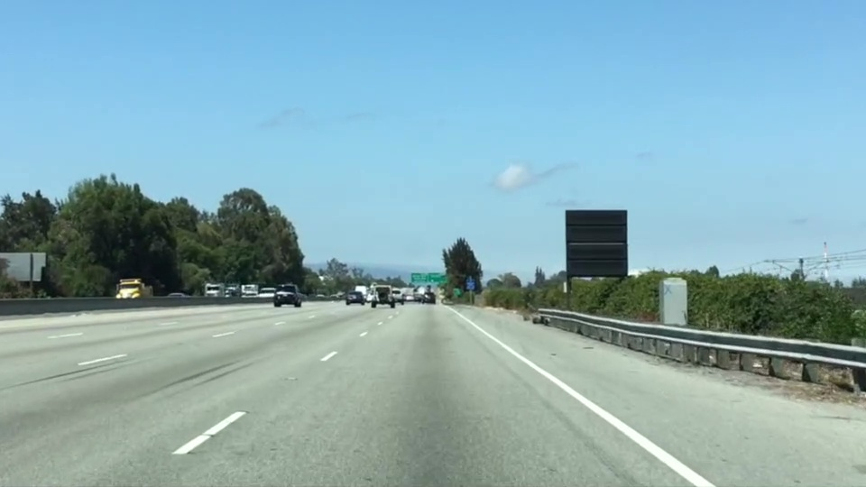

--
车道线检测 01 -- 计算机视觉基础
本文根据 udacity Self-Driving Car Engineer 课程内容整理
如何从一张照片，比如从车辆的前置摄像头的照片中识别出车道线？
比如这样的


相当于要把在照片中特定位置的那些黄线或者白线找出来，同时过滤掉一些干扰。
首先，我们要把黄色或者白色过滤出来。
可以把黄色或者白色分开处理。
现找黄颜色，再找白颜色。
1. 是要读入 img 文件
import matplotlib.pyplot as plt
import matplotlib.image as mpimg
import numpy as np
# Read in the image and print out some stats
image = mpimg.imread('test.jpg')
print('This image is: ',type(image), 'with dimensions:', image.shape)
# Grab the x and y size and make a copy of the image
ysize = image.shape[0]
xsize = image.shape[1]
color_select = np.copy(image) # Note: always make a copy rather than simply using "="
注意这里读入了之后是 [y, x, 3] -- > x
|
v
y
2. 先找出那些比较亮的颜色，我们可以用一个 阈值来筛选，记住，0 代表黑色，255 代表白色。 我们把那些不够亮的地方都设为黑色好了，够亮的设为白色。 也就是：
r_t, g_t, b_t = 220, 220, 220 mask = (image[:, :, 0]) < r_t | (image[:, :, 1] < g_t) | (image[:, :, 2] < b_t ) color_select[mask] = 0 plt.imshow(color_select) plt.show()
3. 筛选区域 我们可以觉得车道线只会在正前方大概一个三角形的区域出现，我们可以只关心这个区域的像素。
left_bottom = [0, 539]
right_bottom = [900, 300]
apex = [400, 0]
# Fit lines (y=Ax+B) to identify the 3 sided region of interest
# np.polyfit() returns the coefficients [A, B] of the fit
fit_left = np.polyfit((left_bottom[0], apex[0]), (left_bottom[1], apex[1]), 1)
fit_right = np.polyfit((right_bottom[0], apex[0]), (right_bottom[1], apex[1]), 1)
fit_bottom = np.polyfit((left_bottom[0], right_bottom[0]), (left_bottom[1], right_bottom[1]), 1)
# Find the region inside the lines
XX, YY = np.meshgrid(np.arange(0, xsize), np.arange(0, ysize))
region_thresholds = (YY > (XX*fit_left[0] + fit_left[1])) & \
(YY > (XX*fit_right[0] + fit_right[1])) & \
(YY < (XX*fit_bottom[0] + fit_bottom[1]))
# Color pixels red which are inside the region of interest
region_select[region_thresholds] = [255, 0, 0]
# Display the image
plt.imshow(region_select)
这里通过 meshgrid 来构造了一个 matrix，它的大小和 img 相同，XX 上的数值表示 img 的 x 位置，YY 上的数值表示 img 的 y 位置。
我们找了三个点，然后找到他们的 X 和 Y，拟合出三条直线，然后筛选出在这三条直线围起来的区域，并把区域内的像素射程我们期望的颜色。
4. 边缘检测 我们有 OpenCV 可以用 canny 算法来进行边缘检测。
edges = cv2.Canny(gray, low_threshold, high_threshold)canny 只对单通道进行 梯度计算，所以对于一个RGB 的img 需要转成 gray
import cv2 #bringing in OpenCV libraries gray = cv2.cvtColor(image, cv2.COLOR_RGB2GRAY) #grayscale conversion plt.imshow(gray, cmap='gray')注意到这里有 low_threshold 和 high_threshold cv2 首先会计算梯度，然后把梯度高于 high_threshold 保留下来，同时略去 低于 low_threshold 的像素。 对于在两者之间的梯度，如果和 high_threshold 的像素相连，就保留，不相连，就删去。
返回得到的edges 是二值的，边缘为白色 255， 非边缘为黑色 0 OpenCV Canny 参考 这个 low_threshold 和 high_threshold 的数值通过经验调出来，1:2 或者 1:3 比较合适。
5. 查找连续的线条 刚才所有的过滤以及梯度都是基于单个的像素的。 如何通过点来查找线条？ 一条直线，可以用 y = mx + b 来表示，不同的直线，可以用不同的 [m, b] 来表示。 直线是在 x-y 的坐标下看，每个点代表每个像素。 但是在 m-b 的坐标下看，每个点就是代表了一条线。 如果图像上有个像素点，那么通过这个的线，会在 m-b 坐标下构成另外一根线条：
b = - xm + y
这种转换，叫做 Hough Transformation，霍夫转换。 如果 x-y 坐标下的一条直线上的点，在 m-b 坐标下应该是这样的，他们会通过同一个点，这个点就是他们 在x-y 上的直线。 但是在笛卡尔坐标 （x-y）下，我们无法表达一条垂直的直线。 因此我们用极坐标来表示，theta-rho 在此情况下，
{kind=link}
{kind=link}
{kind=link}
6. Hough line
lines = cv2.HoughLinesP(masked_edges, rho, theta, threshold, np.array([]), min_line_length, max_line_gap)参数解释：
min_line_length: 构成一条线条的最少需要的像素数目 max_line_gap: 构成一条直线的不同区间之间的最大间隔距离（可能有一些不连续的点能够构成一条线，但是他们要是离得太远，超过了 max_line_gap, 就不计在内了） 这个函数会返回匹配到的那些直线， 我们可以这么使用：
# Do relevant imports
import matplotlib.pyplot as plt
import matplotlib.image as mpimg
import numpy as np
import cv2
# Read in and grayscale the image
image = mpimg.imread('exit-ramp.jpg')
gray = cv2.cvtColor(image,cv2.COLOR_RGB2GRAY)
# Define a kernel size and apply Gaussian smoothing
kernel_size = 5
blur_gray = cv2.GaussianBlur(gray,(kernel_size, kernel_size),0)
# Define our parameters for Canny and apply
low_threshold = 50
high_threshold = 150
masked_edges = cv2.Canny(blur_gray, low_threshold, high_threshold)
# Define the Hough transform parameters
# Make a blank the same size as our image to draw on
rho = 1
theta = np.pi/180
threshold = 1
min_line_length = 10
max_line_gap = 1
line_image = np.copy(image)*0 #creating a blank to draw lines on
# Run Hough on edge detected image
lines = cv2.HoughLinesP(masked_edges, rho, theta, threshold, np.array([]),
min_line_length, max_line_gap)
# Iterate over the output "lines" and draw lines on the blank
for line in lines:
for x1,y1,x2,y2 in line:
cv2.line(line_image,(x1,y1),(x2,y2),(255,0,0),10)
# Create a "color" binary image to combine with line image
color_edges = np.dstack((masked_edges, masked_edges, masked_edges))
# Draw the lines on the edge image
combo = cv2.addWeighted(color_edges, 0.8, line_image, 1, 0)
plt.imshow(combo)